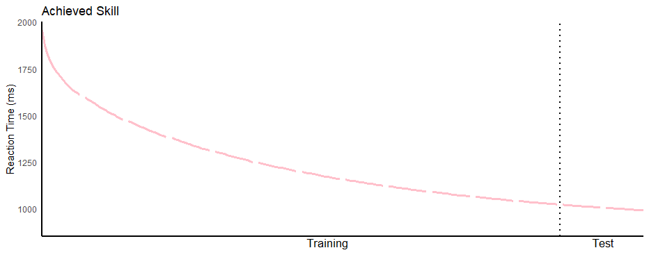

Piano Knowledge Representation and Generalization
It might seem obvious that multiple learning systems interact while learning the piano, however,
only in the past decade or so has research come to grapple with this idea. One way we can divide up
the types of learning is explicit and implicit learning. Explicit learning refers to conscious
learning. Implicit learning refers to learning that is below our consciousness. Abstractly in motor
learning, explicit learning narrows down the solution space of a motor sequence or program for the
correct action. Or in other words, it figures out what the goal of the action should be and
generally what that movement will look like. The implicit learning system will take this information
and fine tune the parameters of the muscles for that movement.
I have been getting more into skiing, so what this looks like for me is that I now know when I am
carving I need to initiate turns by rolling on the balls of my feet, starting from one toe and
ending at the opposite toe while bending my legs in the direction I am rolling my feet. Even though
I know this explicitly, I need to fine tune the movements through implicit learning in order to
become a more proficient carver. These two systems have different learning speeds. The explicit
learning portion is marked by a fast increase in learning speed (initial learning), but once that
part has been learned, the implicit learning (later learning) portion is much slower and takes a
long time to fine tune. This is why we see motor learning following a curve that generally will look
like the figure below, where a quicker reaction time (lower on the graph) indicates superior
learning.

It is important that we know which learning system is responsible for the current gap in knowledge.
For example, I would still benefit from explicit feedback about my form while I am carving, because
maybe I am not doing a good job of keeping my upper body independent of my lower body while turning.
Knowing this explicitly can help me recalculate the goal of my movements and then fine tune the
implicit learning. This will cause my improvements to be much greater and faster than if I had to
figure this out on my own or if I kept fine tuning my implicit learning. This same idea can be
applied to piano learning. For example, if one does not know that a finger tuck is necessary to have
a consistent speed for playing scales, getting that feedback would greatly increase their ability to
play a scale at consistent speed and allow them to optimize for the correct goal.
However, too much feedback can inhibit learning. Feedback taps into the explicit learning system and
there is evidence that explicit and implicit systems may share resources or inhibit each other.
Thus, if the explicit system keeps getting pinged, this will inhibit learning in the implicit
system. This is not desirable if one has already learned the goal with the explicit system and now
all of the learning needs to be done with the implicit system.
When learning is more difficult with a high cognitive load, the selected action is learned slowly
and feedback helps the learner figure out what the optimal action to take is. Thus, frequent
feedback can enhance the system that is driving learning and performance gains instead of taking
away from it. Knowing this will dictate how feedback is given. If it is the case that a learner is
slowly accelerating, like learning the C-major scale, we can infer that the task is being driven by
implicit learning and that maybe it is a low load task. This means we do not need to give that much
feedback. In fact, we could even increase the difficulty of the task, like by increasing the BPM
that the scale is played at to enhance learning. In this way, we can appropriately
scaffold learning
rather than giving learners crutches.
Learning any skill is a complex process that requires us to break the problem down and understand
what systems in our brain are driving the learning at that point. We can wield this information to
enhance learning by changing feedback or task difficulty. Here at MIDIScale, we are excited to bring
a new experience to piano learning that will help learners reach their learning goals faster. We
will be launching the Alpha version at the end of this month!
Join the mailing list to gain access to our bi-weekly newsletter and software updates!
This site is protected by reCAPTCHA and the Google Privacy Policy and Terms of Service apply.